Thermal runaway represents one of the most critical safety challenges in modern energy storage systems. As we transition toward a sustainable energy future with large-scale battery installations reaching mega-watt-hour capacities, understanding and preventing thermal runaway has become essential for protecting personnel, maintaining grid stability, and ensuring reliable energy infrastructure.
Thermal runaway is a catastrophic chain reaction where heat generation exceeds a battery's ability to dissipate it, potentially leading to fires, explosions, and toxic gas emissions. This phenomenon progresses through five distinct stages, from subtle early warnings to complete system failure, making early detection and prevention crucial for safety.
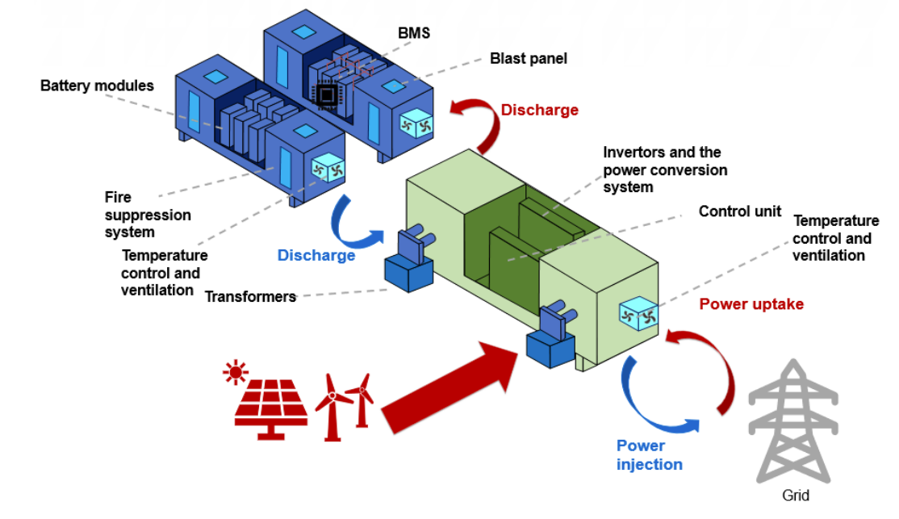
Understanding Thermal Runaway: The Five-Stage Process
Stage 1: Accumulation of Triggers
The initial phase involves gradual battery degradation due to operational stresses. In energy storage systems, intensive charge-discharge cycles create microscopic cracks in electrode materials while electrolyte decomposition products accumulate, steadily increasing internal resistance. Early warning signs include battery management system alarms for "single cluster voltage abnormality" or "temperature difference exceeds limit," along with infrared thermal imaging revealing localized temperature increases of a few degrees above pack average.
Stage 2: Heat Generation and Gas Release
As internal temperatures rise beyond normal operating ranges, exothermic decomposition reactions begin within battery cells. The solid electrolyte interface (SEI) layer starts breaking down, leading to rapid electrolyte decomposition and gas generation. Multiple gases are produced including CO₂, CO, H₂, CH₄, and toxic compounds like HF.
Stage 3: Thermal Propagation
Heat from the failing cell transfers to adjacent cells through conduction, convection, and radiation. Without proper thermal barriers, neighboring cells begin experiencing elevated temperatures, potentially triggering their own thermal runaway events. This creates a cascading failure that can consume entire battery modules or packs.
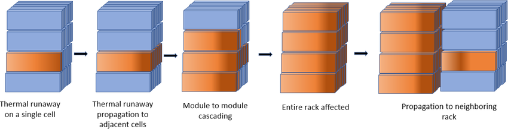
Stage 4: Venting and Fire Risk
Battery cells begin venting through pressure relief mechanisms, releasing flammable gases and electrolyte vapors. These substances can ignite when mixed with air in the correct fuel-to-air ratio, leading to intense fires that are difficult to extinguish. Traditional fire suppression methods often prove inadequate due to the high energy density and potential for re-ignition.
Stage 5: Complete System Failure
The final stage involves widespread fire, explosion, or toxic gas emission affecting the entire energy storage system. This can result in grid disturbances, infrastructure damage, and significant safety risks to personnel and surrounding communities.
Primary Causes and Risk Factors
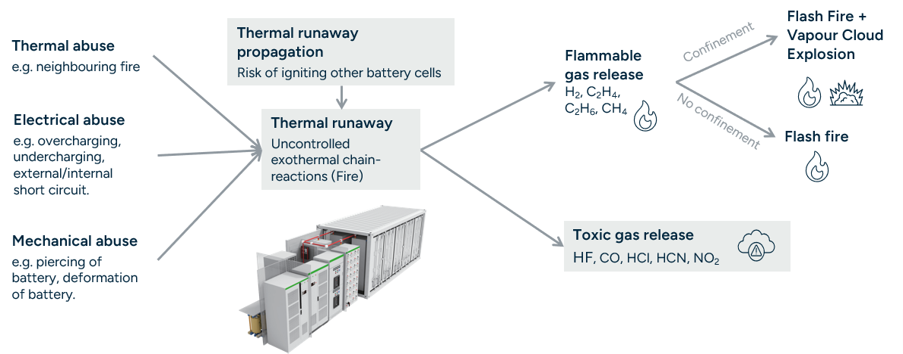
Electrical Abuse: Overcharging beyond manufacturer specifications creates excessive heat generation within cells. Modern regulations require testing at maximum charge current rather than the previous 1/3C standard. Over-discharge conditions can also stress cells and increase thermal runaway risk through internal resistance changes.
Thermal Abuse: External heat sources, including elevated ambient temperatures, inadequate cooling systems, or heat from adjacent equipment, can push battery cells beyond their safe operating temperature ranges. Most lithium-ion batteries operate optimally between 15-35°C, with thermal runaway typically initiating around 130-180°C depending on chemistry.
Mechanical Damage: Physical impacts, crushing, or penetration can compromise battery cell integrity, creating internal short circuits that generate localized heating. Manufacturing defects such as impurities, weak separators, or poor welds can create similar internal failure modes.
System-Level Factors: Thermal management system malfunctions, inadequate ventilation, poor system design, or aging components can all contribute to conditions favorable for thermal runaway initiation and propagation.
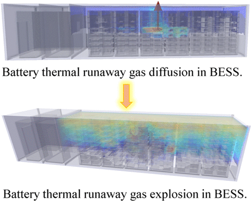
Advanced Detection and Prevention Technologies
Thermal Runaway Detection Systems
Modern detection systems employ multiple sensing technologies to identify early-stage thermal events. Gas detection sensors monitor for electrolyte vapors (DMC/EMC/EC), hydrogen, carbon monoxide, and carbon dioxide using NDIR, MEMS TCD, and MEMS MOX technologies. These systems can detect thermal runaway initiation within seconds of initial cell venting.
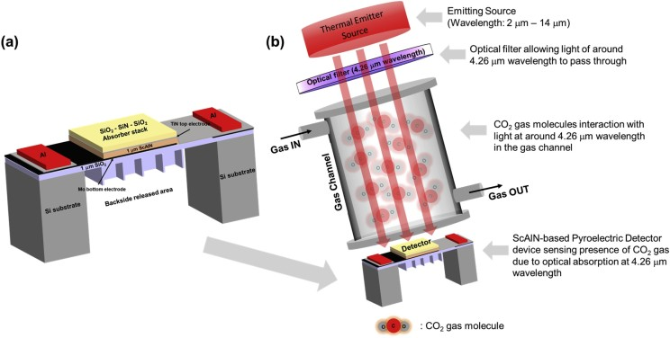
Pressure sensors detect gas buildup from decomposition reactions, while advanced temperature monitoring uses non-invasive modeling techniques to determine core cell temperatures before surface heating becomes apparent. Multi-parameter detection systems combine these inputs with voltage and current monitoring for comprehensive early warning capabilities.
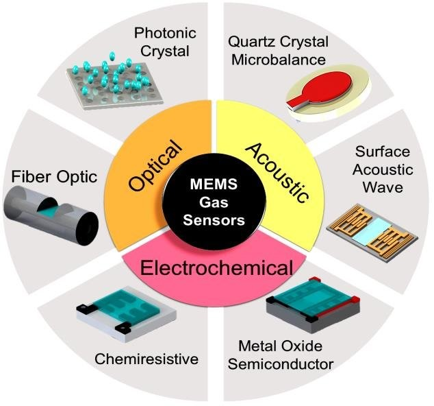
Battery Management Systems (BMS)
Modern BMS incorporate sophisticated monitoring and control functions beyond basic voltage and temperature measurements. Advanced systems perform real-time thermal modeling, predictive analytics for thermal runaway risk assessment, and automated protective responses including current limiting, cooling system activation, and emergency shutdown procedures.
Cell balancing functions ensure uniform charge distribution to minimize thermal hotspots, while diagnostic capabilities track battery aging and performance degradation that could indicate increased thermal runaway susceptibility.
Regulatory Standards and Testing
International standards provide frameworks for thermal runaway testing and system safety validation. Key regulations include:
- UN ECE R100.03: European requirements for electric vehicle battery systems, including thermal propagation testing and 5-minute warning requirements
- UL 9540A: American and Canadian standard for evaluating thermal runaway fire propagation in battery energy storage systems
- ISO 6469-1: Includes rapid heating test methodology for thermal runaway evaluation
- NFPA 855: Installation standards for stationary energy storage systems
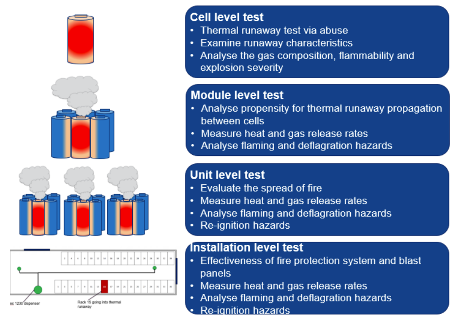
Testing protocols include overcharge, external short circuit, nail penetration, thermal stability, and gas analysis tests to evaluate battery response under abuse conditions.
Thermal Management Solutions
Passive Cooling Technologies: Phase change materials (PCMs) offer passive thermal regulation by absorbing heat during solid-liquid phase transitions without significant temperature increases. Common PCMs include paraffin waxes with melting points aligned to battery operating temperatures, enhanced with graphite or metal additives to improve thermal conductivity.
PCMs provide several advantages: no external power requirements, uniform temperature distribution, and reversible heat absorption/release cycles. However, limitations include relatively poor thermal conductivity of organic PCMs and weight considerations for mobile applications.

Active Cooling Systems: Active cooling employs mechanical systems to transfer heat away from battery cells. Air cooling systems use fans to circulate ambient air over battery surfaces, while liquid cooling circulates coolants through plates or channels in thermal contact with cells.
Liquid cooling typically provides superior heat transfer performance compared to air cooling, enabling higher charge/discharge rates and better temperature uniformity. Advanced systems use closed-loop cooling with temperature controls, flow rate management, and heat exchangers for optimal thermal regulation.
Immersion Cooling: Direct immersion cooling represents the most advanced thermal management approach, submerging battery cells in non-conductive dielectric fluids. This method provides several critical advantages:
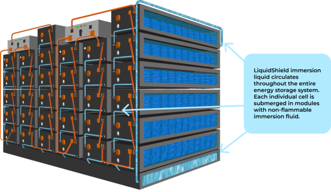
- Superior Heat Transfer: Direct contact between coolant and cells eliminates thermal resistance layers present in indirect cooling methods. Heat transfer rates are significantly higher than air or liquid plate cooling systems.
- Thermal Runaway Suppression: Immersion fluids can absorb and dissipate heat faster than failing cells can generate it, effectively preventing thermal runaway propagation. If one cell fails, the immersion fluid contains the damage and prevents cascade failures.
- Uniform Temperature Distribution: Complete submersion ensures consistent temperatures across all battery cells, eliminating hotspots that could trigger thermal events.
- Fire Prevention: Dielectric fluids are typically non-flammable and can suppress combustion by limiting oxygen access to failing cells.
Recent studies demonstrate immersion cooling's effectiveness in preventing both thermal runaway initiation and propagation, with cooling rates up to 0.143°C/s compared to 0.037°C/s for air cooling. Dynamic flow systems provide additional benefits by continuously circulating coolant for enhanced heat removal.
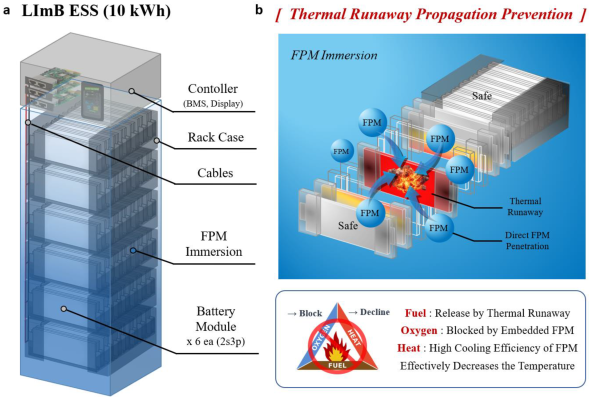
Implementation Best Practices
System Design Considerations: Proper system design is fundamental to thermal runaway prevention. Key considerations include:
- Cell Spacing and Barriers: Adequate spacing between cells with thermal barriers prevents heat transfer between adjacent cells. Fire-resistant materials and structural containment help isolate thermal events.
- Ventilation and Gas Management: Proper ventilation systems direct vented gases away from occupied areas and prevent accumulation of combustible mixtures. Gas detection and evacuation systems provide personnel protection.
- Emergency Response Systems: Automated fire suppression systems using appropriate extinguishing agents for lithium-ion battery fires, along with emergency shutdown procedures and evacuation protocols.
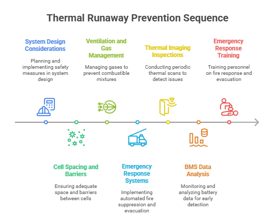
Operational Protocols: Regular maintenance and monitoring programs ensure early detection of potential issues:
- Thermal Imaging Inspections: Periodic infrared thermal scans identify cells operating at elevated temperatures before thermal runaway occurs.
- BMS Data Analysis: Continuous monitoring of voltage, temperature, and current data with trend analysis to identify degrading cells or modules.
- Emergency Response Training: Personnel training on lithium-ion battery fire response, evacuation procedures, and proper use of fire suppression equipment.
Future Developments and Emerging Technologies
Advanced Materials: Research continues into battery chemistries with improved thermal stability, including lithium iron phosphate (LFP) cells that demonstrate superior safety performance compared to traditional lithium-ion formulations. Solid-state batteries eliminate flammable liquid electrolytes, significantly reducing thermal runaway risks.
Positive Temperature Coefficient (PTC) materials integrated into cell designs automatically increase resistance as temperature rises, interrupting current flow and preventing thermal runaway propagation. Advanced separator materials and flame-retardant additives provide additional protection against thermal events.
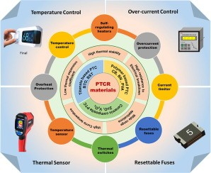
Artificial Intelligence and Predictive Analytics: AI-powered battery management systems use machine learning algorithms to predict thermal runaway risk based on operational data patterns. These systems can identify subtle degradation indicators and recommend proactive maintenance before critical failures occur.
Enhanced Detection Technologies: Next-generation sensor technologies provide earlier and more reliable thermal runaway detection. Multi-spectral infrared sensors, acoustic emission monitoring, and electrochemical impedance spectroscopy offer new approaches to identifying failing cells before thermal events occur.
Conclusion
Preventing thermal runaway in energy storage systems requires a comprehensive approach combining advanced detection technologies, robust thermal management systems, proper system design, and rigorous operational protocols. As energy storage deployment continues expanding globally, implementing these safety measures becomes essential for protecting personnel, infrastructure, and public confidence in clean energy technologies.